Leopold: Lightweight Estimate of Preservation of Local Density
Approximating densMAP
February 16 2022
Source:vignettes/articles/leopold.Rmd
leopold.RmddensMAP
densMAP is a
variation on UMAP that attempts to preserve the differences in density
in the original data by adding a new component to the cost function. It
is available in the Python UMAP implementation by setting
densmap=True. See also this
excellent tutorial. There has been a request to add
densMAP to uwot since the start of 2021. This document describes the
approximate version of densMAP that is available in uwot
which may be good enough. But first, a bit more about densMAP.
densMAP can be seen as adding a regularization to the UMAP cost function in which the “local radius” of each observation in the input and output space is calculated and the Pearson correlation between the two is optimized.
The radius of observation , is calculated as:
where
is the distance between point
and
and
is the symmetrized edge weight between
and
,
i.e. the radius is the edge-weighted average of the squared distances
between each
and each of its neighbors. Because the matrix has been symmetrized,
may have a different number of neighbors than the
n_neighbors parameter that the user specifies.
To get a feel for what densMAP does, below are some results from the
Python UMAP (i.e. no uwot output here), with and without
densmap=True. As recommended by the current UMAP README, I
also set n_neighbors=30, except for
subset_clusters, which I’ll explain when I get to it.
Everything else was left as the defaults.
The images below are:
- Top left: the UMAP results colored by the typical label for that dataset. There are some cryptic numbers in the subtitle which you should feel free to ignore.
- Top right: UMAP results with each point colored by the log of the input local radius, using the ColorBrewer Spectral palette. Red means a small radius, blue means a large radius. This should show areas that densMAP is likely to contract or expand, respectively.
- Middle left: the densMAP results colored by the typical label for that dataset.
- Middle right: the densMAP results colored by local radius.
- Bottom: a plot of the log of the input local radii vs the log output
radii and the Pearson correlation between them. These radii are returned
from the
fit_transformmethod whendensmap=True. When there were more than 1000 points, I usedsmoothScatterto plot the results.
First two datasets are simple simulation sets based on How to Use t-SNE Effectively, specifically sections 2 (“Cluster sizes in a t-SNE plot mean nothing”) and 6 (“For topology, you may need more than one plot”).
two_different_clusters
This dataset consists of two 50D Gaussians of 5,000 points each. One
of the clusters has a standard deviation 10x the other. I used snedata to generate
this data (via the two_different_clusters_data
function).
 |
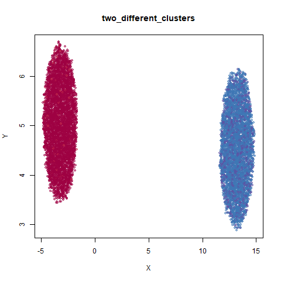 |
| 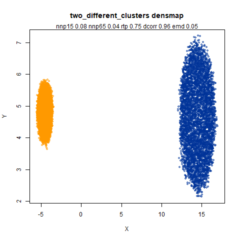 | 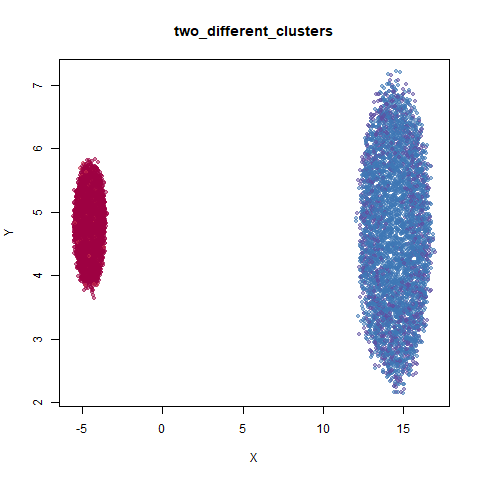 |
| 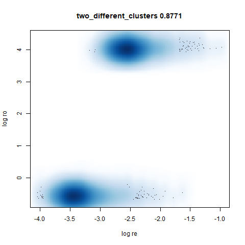 |
Like t-SNE, default UMAP shows both of these clusters as the same size. densMAP shows one of the clusters as smaller. A good start.
subset_clusters
This dataset once again features two 50D gaussians of 5,000 points each, but this time they overlap entirely. The larger cluster has a standard deviation of 50, the smaller a standard deviation of 1.
For this dataset I used n_neighbors=150, much larger
than the n_neighbors=30 setting used for the other plots.
This was to be consistent with the plots I generated with
uwot. With uwot I precalculated exact nearest
neighbors for all datasets and for this dataset, using the exact 30
nearest neighbors results in the smaller cluster being embedded at the
edge of the larger cluster. Presumably 30 nearest neighbors doesn’t
result in enough edges between the two clusters to properly situate the
smaller cluster. The approximate nearest neighbors routine used in UMAP
results in edges between sufficiently far away neighbors to create a
neighborhood to that reflects the global structure better. I didn’t
investigate this thoroughly, but it sounds plausible to me.
 |
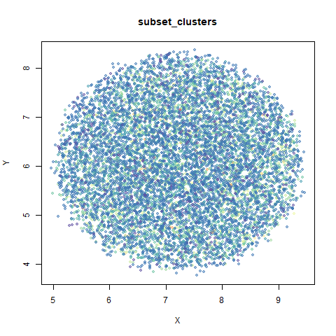 |
| 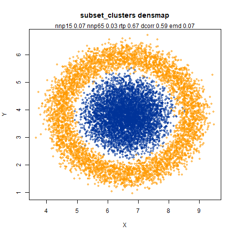 | 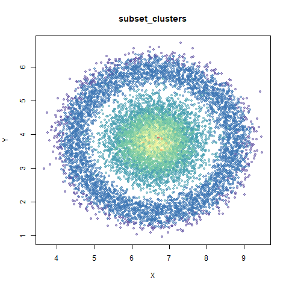 |
| 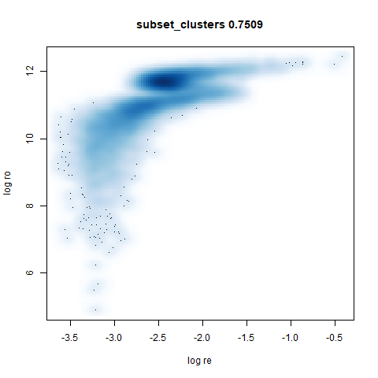 |
UMAP considers these two clusters to be the same size. With densMAP,
the ring-shaped structure that is found with high perplexities with
t-SNE shows up. But at least the small cluster is inside the big one.
Note that if you re-run this with n_neighbors=30 the
results are not noticeably changed.
s1k
This is a synthetic dataset I like to use: 1000 points from a fuzzy 10D simplex.
 |
 |
| 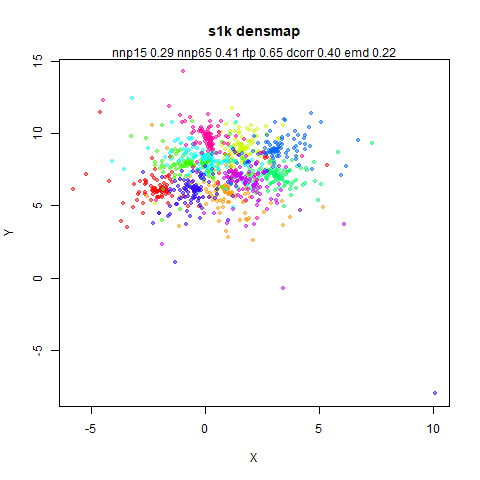 |  |
| 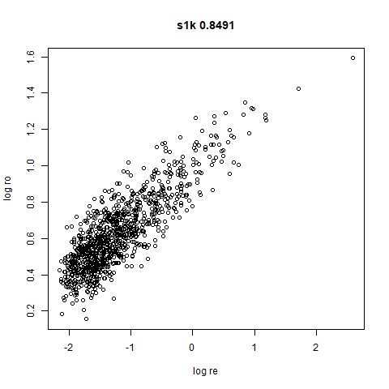 |
I can’t say I like what densMAP has done here. There is one point that has been flung far away from the rest of the plot. You can see from the coloring that this is because it has a large local radius. This perhaps indicates that the local radius calculation can be affected by edge effects.
swissroll
A swiss roll dataset of my own devising.
 |
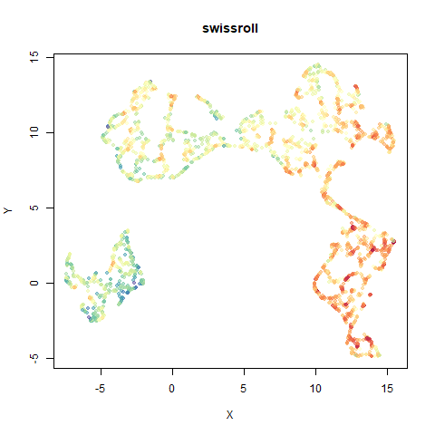 |
| 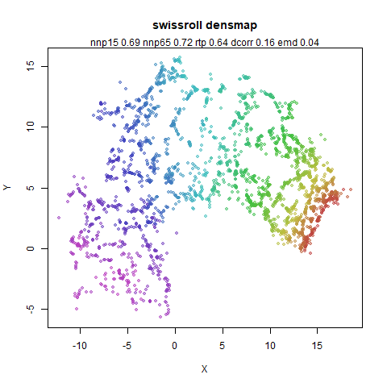 | 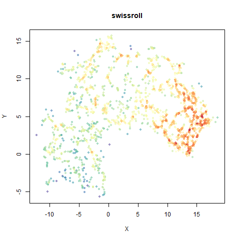 |
 |
densMAP does a noticeably better job at not ripping the swiss roll than UMAP does. As you would expect the local density to be fairly uniform across a 2D manifold I don’t know if there’s an a priori reason to have thought densMAP would do a better job here.
scurvehole
A 3D S-curve with a hole data set, used to validate the PaCMAP method (see also the github repo).
| 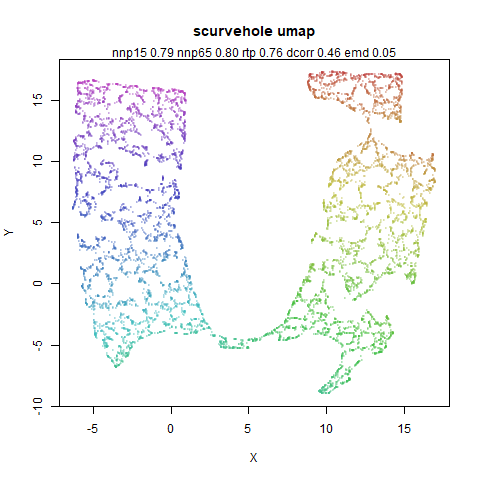 |  |
| 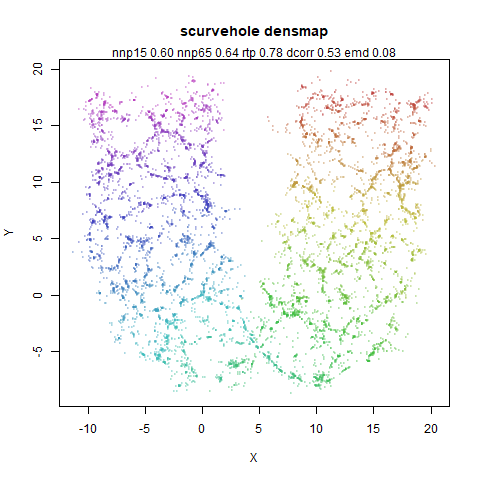 |  |
 |


spenguins
The Palmer
Penguins. The s in spenguins stands for
scaled, because I filtered out entries with missing values then Z-scaled
the inputs.
 |
 |
 |
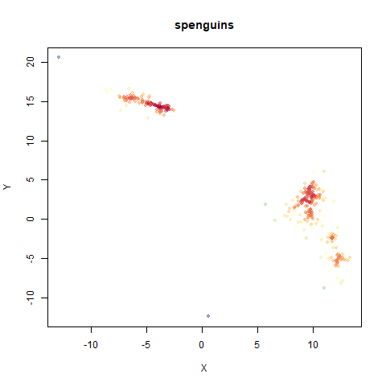 |
| 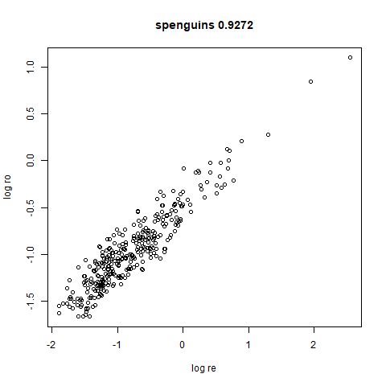 |
mammoth
A 3D point cloud of a mammoth at the Smithsonian, from Understanding UMAP, based on work originally done by Max Noichl.
 |
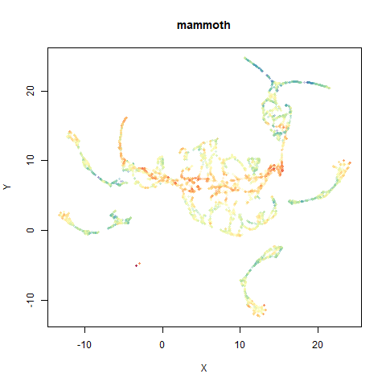 |
| 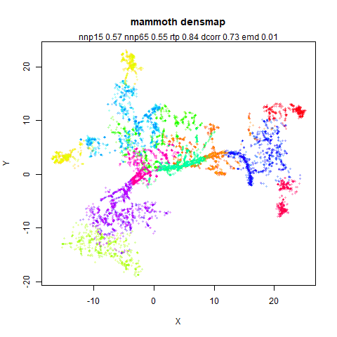 | 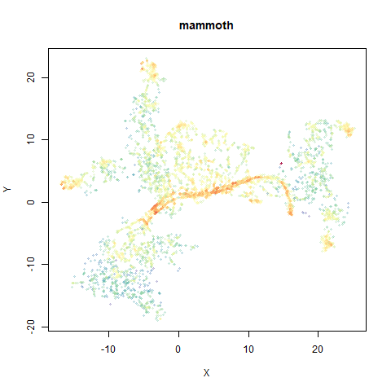 |
| 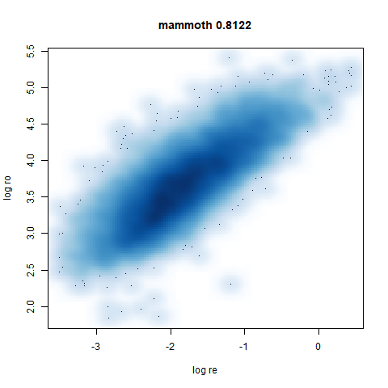 |


mnist
The MNIST digits images.
| 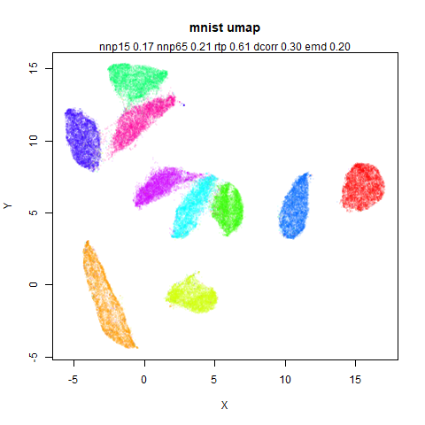 |  |
| 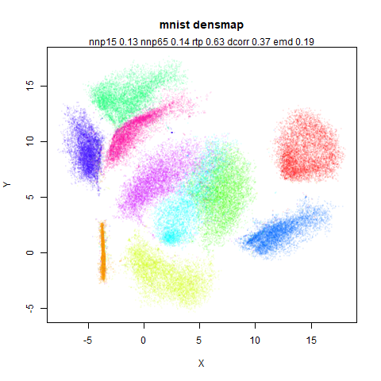 | 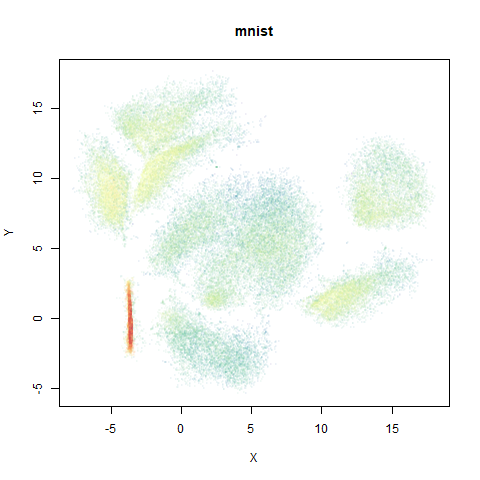 |
 |
The orange cluster is the 1 digits and its smaller radius is exceptionally obvious when coloring the UMAP plot by radius. It very noticeably shrinks when densMAP goes to work on it.
fashion
The Fashion MNIST images.
 |
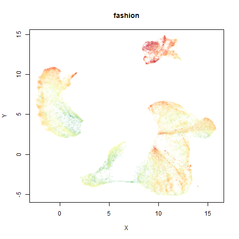 |
 |
 |
 |
Similarly to the MNIST digits, the orange cluster (this time its images of pants) is noticeably smaller than the other clusters.


norb
The Small NORB images.
 |
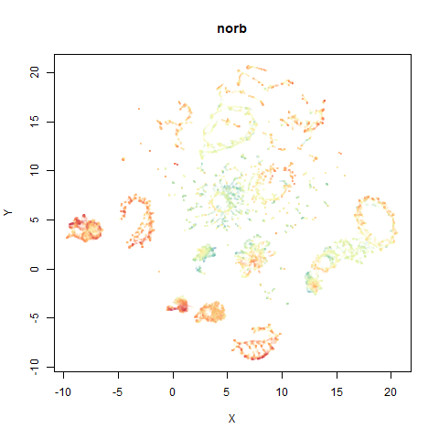 |
 |
 |
| 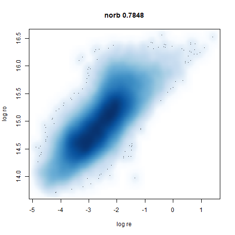 |
You can see the largest of the blue/purple ring-like structures is broken up by UMAP, but densMAP preserves it. In fact, the densMAP plot is one of the nicer UMAP layouts of the small NORB datasets I’ve seen.


macosko2015
The macosko2015 RNAseq data.
| 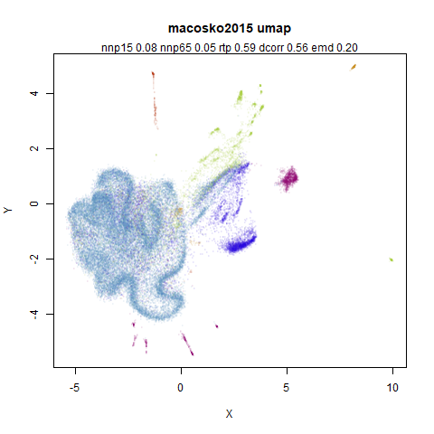 |  |
 |
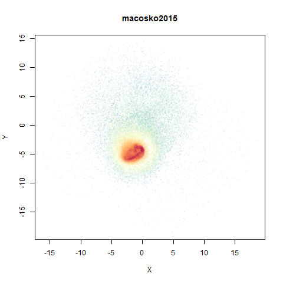 |
| 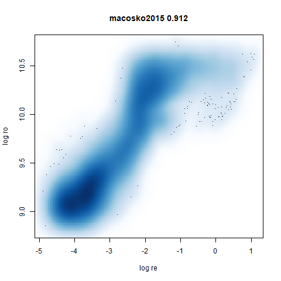 |
This dataset (an RNA sequence dataset) isn’t a lot of fun to visualize with vanilla UMAP, but densMAP does not improve matters.
tasic2018
RNAseq data from the Allen Brain Atlas originally reported by Tasic and co-workers.
 |
 |
| 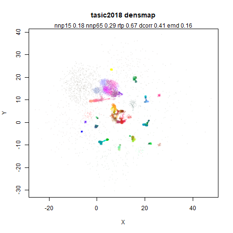 |  |
| 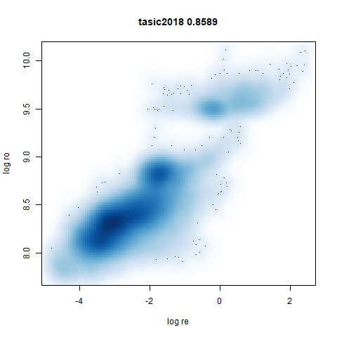 |
Another RNAseq dataset, densMAP has a very interesting effect on the cluster sizes, but because some of the clusters have a very low density, this has the effect of squashing the other into the center of the plot.
lamanno2020
Another RNASeq data, found via the Picasso example notebook. I think the publication reference is https://doi.org/10.1038/s41586-021-03775-x (was published at biorXiv in 2020).
 |
 |
| 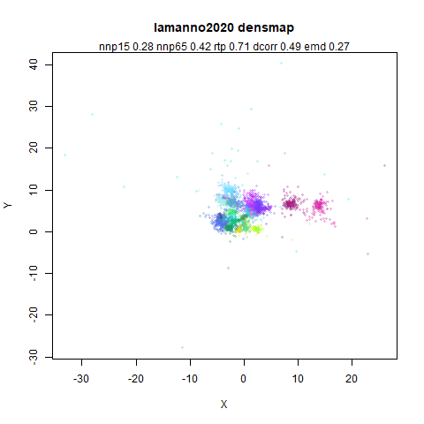 | |
ng20
The 20 Newsgroups dataset, which I manually converted into a dense 3000D PCA result: see this gist.
 |
|
 |
 |
densMAP noticeably has a hard time mapping the local radii to the 2D output.
What I take away from all this:
- densMAP does a good job at maintaining the correlation of input and output radii. The only time it fails is with the 20 Newsgroups dataset.
- A good correlation doesn’t necessarily mean a helpful static
visualization. Some of the results have some clusters which are highly
dispersed which may reflect the true relationship of densities but makes
it hard to actually see the cluster, and the rest of the data gets
crushed into the middle of the plot. That’s not necessarily a problem if
you have an interactive plot and can pan and zoom. Or you can change the
regularization value of
dens_lambda. I didn’t try that but I have no reason to doubt a satisfying value can be found for any of the datasets where I didn’t like the output with default settings.
But I don’t currently want to implement densMAP because it involves adding lots of extra code, much of it in C++ and I am very lazy.
Approximating densMAP
Here’s my pitch for an approximation to densMAP, which I have named the Lightweight Estimate of Preservation of Local Density (Leopold).
For the input radii, as part of the smooth k-nearest neighbor
distances routine we already calculate
which is the distance to the nearest neighbor of each item in the
dataset (subject to the local_connectivity constraint).
Additionally, we also calculate
which is a normalization factor used with the neighbors at distance
greater than
.
It must have units of distance, and the larger the distances to the
neighbors, the larger
gets. So I propose the following definition for the local radius:
The biggest difference between this definition of the local input radii is that I haven’t bothered to square the distances (it doesn’t make much difference for leopold) and that the values for and are calculated before the symmetrization of the UMAP input edge weights. So these values are missing the influence of observations outside the initial k-nearest neighborhood graph.
For the output radii, I know from looking at the output
weight function parameters, that increasing the a
parameter makes the clusters in a UMAP plot shrink, and vice versa. So
let’s use that as measure of the output density, i.e. the inverse of the
local radius. As every point has its own radius, the value for a given
weight between points
and
will be the geometric mean of the two radii:
where is a scaled version of the input radius suitable for the lower dimensional space. This is a similar sort of scaling to that used by Zelnik-Manor and Perona for “self-tuning” spectral clustering, and also recommended for local scaling to reduce hubness in high dimensional space by Schnitzer and co-workers.
The scaling from input to output space is not sophisticated: I have observed that for typical values of used in UMAP, a usable range of values are between 0.01 (very diffuse clusters) and 100 (very tight clusters), so we will just map the inverse of the input local radii to that range.
The final adjustment to this is that it would be good to introduce a
parameter that controls how much of the range of a is used
in the output and thus how big a disparity of the input radii is
reflected in the output. To that end, there is an adjustable parameter
for leopold: a dens_scale parameter. Set it to 1 and it
uses all the available range of a. Set it to 0 and you get
plain old UMAP back, with a fixed global value of a as
specified by the user (or via the spread and
min_dist parameters). Intermediate values get intermediate
results.
In my mind this scaling of the radii is straightforward, but looking up at that description maybe it’s not. The procedure is:
- Define the minimum log density as
where
is the UMAP
aparameter for the output and is theden_scaleparameter. - Define the maximum log density as .
- Range scale between the minimum and maximum log density. Call that range scaled log density
- .
- The leopold output weight function is .
The Advantage of leopold
The main advantage is for me: to implement this I don’t have to write
much new code:
and
are already calculated and implementing the per-observation value for
a in the output function requires creating a new version of
the umap gradient routine that expects a vector of values rather than a
scalar. This is a lot less work than implementing densMAP.
The Disadvantage of leopold
It’s all a bit approximate. But all I really want from this technique is that it makes the dense clusters get smaller and the diffuse clusters get bigger. The exact changes seem less important to me as long as they are vaguely sensible. I don’t claim to have a good sense of what I expect to see when a blob of data with an intrinsic dimensionality of and a radius of is embedded into 2D versus one with an intrinsic dimensionality of but a radius of . Even if that was accurately embedded, would it even look sensible let alone helpful?
Results
Here are some plots using leopold. I used exact nearest neighbors for
these results as nearest neighbor calculations are usually the slowest
part of UMAP. The following deviations from default parameters were
used: min_dist = 0.1 to be closer to the Python UMAP
results. For consistency with densMAP, n_neighbors = 30
except for subset_clusters which uses
n_neighbors = 150. Also to be consistent with densMAP, an
extra 200 epochs on top of the usual default n_epochs was
used.
In the plots below:
top left: the output of running leopold,
- Top left: the leopold results colored by the typical label for that dataset.
- Top right: UMAP results with each point colored by the log of the input local radius, using the ColorBrewer Spectral palette. Red means a small radius, blue means a large radius. This should show areas that densMAP is likely to contract or expand, respectively.
- Bottom left: a plot of the log of the input local radii vs the log
output radii and the Pearson correlation between them. When there were
more than 1000 points, I used
smoothScatterto plot the results. - Bottom right: a plot of the log of the densmap input local radii against the leopold equivalent (). The number in the title is Pearson correlation. There’s no particular reason for the two measures of local radius to be the same, but they should show a similar trend.
For a lot of these datasets, I won’t have anything to say unless there is an interesting contrast or similarity with densMAP.
two_different_clusters
 |
 |
leopold is able to produce two different sizes for the cluster,
although the size disparity is much larger than for densMAP. This is due
to the very bimodal nature of the standard deviations in this dataset.
One cluster gets one end of the radii scale (highly disperse) and the
second cluster gets the other (highly compact). Turning down
dens_scale to something like 0.2 works well
for this data set. But it doesn’t really matter as this is a very
artificial dataset. As long as the clusters are the right relative size
I am happy.
subset_clusters
 |
This shows an interesting difference with densMAP: with densMAP, the outer yellow ring had a more uniform density, whereas for leopold there is a noticeable density gradient towards the center. I leave it up to you to decide if that is a good or a bad thing.
s1k
 |
 |
The point that got pushed far away from the rest of the data in the densMAP plot is not as far away with leopold.


mnist
 |
 |
The main thing I hoped to see was the orange ‘1’ cluster shrink. And it does. The yellow ‘2’ cluster has also noticeably grown. Changes are more subtle for the other clusters, but apart from the ‘1’ cluster their densities are all quite similar. I’m happy with this.
fashion
 |
 |
 |
 |
leopold behaves in a densMAP-like way here too by shrinking the orange cluster. The clusters which densMAP expands are also larger here, but are not as diffuse as densMAP makes them. I personally prefer the leopold layout, but I am biased so you should probably just ignore me.

norb
This layout is fine, and maybe a bit neater than the UMAP one. But I still like the densMAP version better.


Conclusions
- I should probably be clear that I don’t think there’s anything wrong with densMAP.
- I am just currently too lazy to make all the changes in
uwotit would need to be implemented. Hence leopold’s creation. - Neither leopold’s definition of local radii or the results exactly map that of densMAP. So don’t go looking to reproduce densMAP plots exactly with it.
- I think the leopold results look fine. The dense clusters get smaller and the diffuse clusters get larger, although in the latter case not to the same extent as densMAP. However, that isn’t a big disadvantage from my perspective.
- densMAP does a better job in terms of the correlation between its input and output radii.
- Qualitatively, the densMAP and leopold results are quite similar.
- The correlations between the leopold definition of local radii and the densMAP version are pretty high for real datasets. So I venture to suggest they encode quite similar information.
If you want to use leopold in uwot:
- Set the
dens_scaleparameter to a value between 0 (exactly like UMAP) to 1 (use the full range of usefulavalues). - Using leopold doesn’t seem to require extra epochs and you don’t need to worry about having to run normal UMAP for a number of epochs before applying leopold.
- Nor does it seem to benefit from a larger value of
n_neighbors. - I have re-run the results with
n_neighbors = 15and defaultn_epochsand not noticed a very big effect compared to the results here, so I am not showing them as there are already way too many images on this page. - You can transform new data with models generated where
dens_scaleis set. When UMAP transforms new data, an adjusted local connectivity is used which affects both and so the estimated values of are not as precise as I would like, but the effect seems to be quite small. - Even if you don’t use the local radii to generate the UMAP layout,
coloring the results by the log of
localris quite informative as to which parts of the embedding you would expect to shrink or expand. - A conservative use of leopold would be to run UMAP
normally, visualize the results coloring by
localrand then if there are obvious clusters that are a lighter or darker hue, run withdens_scale = 1from the current coordinates for a couple of hundred more epochs.
Here’s how you use it with iris: